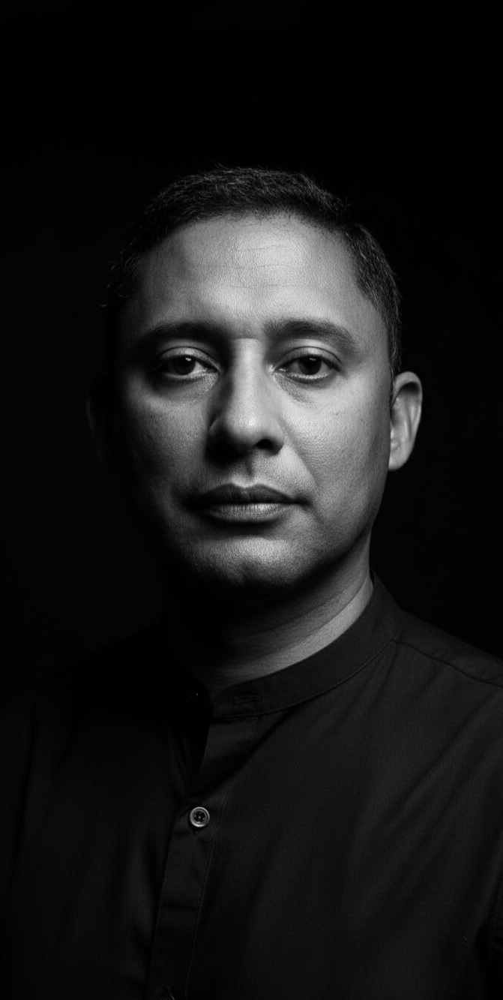

Cristian Klen
Banco de Dados · Engenharia de Software · Inteligência Artificial
Corpo docente · CC e TADS
Quem está à frente das aulas de Ciência da Computação e TADS na UERJ Zona Oeste. Passe o mouse ou toque no card para acessar o currículo Lattes, o LinkedIn e os projetos de cada docente.

Banco de Dados · Engenharia de Software · Inteligência Artificial
Currículo e contatos
Cristian Klen
Disciplinas a definir
Currículo e contatos
Max Martins
Cálculo II · Geometria Analítica · Matemática Discreta
Currículo e contatos
Thilene Falcão Luiz